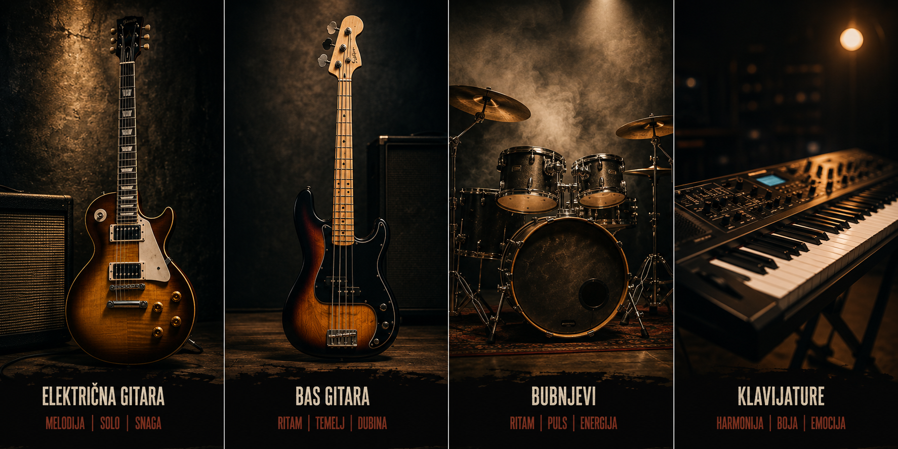

Queen
London, UK | 1970 – 1991
Jedan od najpopularnijih bendova svih vremena. Kombinacija operske drame, hard rocka, balade i disco ritma — niko nije zvučao kao Queen, i niko nikad neće.
Članovi i instrumenti
- Freddie Mercury
- Vokal
- Tenor – bariton raspon (4 oktave)
- Operski stil
- Klavir
- Upright piano
- Yamaha grand piano
- Vokal
- Brian May
- Gitara
- Red Special (handmade)
- Ritmična i solistička gitara
- Prateći vokal
- Klavijature
- Gitara
- Roger Taylor
- Bubnjevi
- Ludwig drum kit
- Gretsch bubnjevi
- Vokal
- Prateći vokal
- Solo vokal (Radio Ga Ga)
- Gitara (sporadično)
- Bubnjevi
- John Deacon
- Bas gitara
- Fender Precision Bass
- Music Man StingRay
- Ritam gitara (sporadično)
- Bas gitara
Diskografija (studijski albumi)
| Album | Godina | Žanr | Napomena |
|---|---|---|---|
| Queen | 1973 | Hard Rock, Glam Rock | Debitantski album |
| Queen II | 1974 | Hard Rock, Progressive Rock | Konceptualni dvodijelni album |
| Sheer Heart Attack | 1974 | Glam Rock, Hard Rock | Komercijalni proboj |
| A Night at the Opera | 1975 | Arena Rock, Opera Rock | Bohemian Rhapsody; najprodavaniji UK album |
| A Day at the Races | 1976 | Arena Rock | Nastavak "Opere" |
| News of the World | 1977 | Hard Rock, Punk Rock | We Will Rock You; We Are the Champions |
| Jazz | 1978 | Hard Rock, Pop Rock | Fat Bottomed Girls |
| The Game | 1980 | Pop Rock, New Wave | Crazy Little Thing Called Love; Another One Bites the Dust |
| Flash Gordon (OST) | 1980 | Soundtrack, Rock | Film soundtrack |
| Hot Space | 1982 | Funk, Disco, Rock | Under Pressure (sa Davidom Bowiejem) |
| The Works | 1984 | Pop Rock, Synth Pop | Radio Ga Ga; I Want to Break Free |
| A Kind of Magic | 1986 | Pop Rock, Arena Rock | Highlander soundtrack; A Kind of Magic |
| The Miracle | 1989 | Pop Rock, Rock | I Want It All; Breakthru |
| Innuendo | 1991 | Art Rock, Hard Rock | Posljednji album; Show Must Go On |
| Made in Heaven | 1995 | Pop Rock, Arena Rock | Posthumno; materijal Freddieja Mercuryja |
Nirvana
Aberdeen, Washington, USA | 1987 – 1994
Pokrenuli su grunge revoluciju i postali glas generacije X. Nevermind je promijenio tok popularne muzike u jednoj noći.
Članovi i instrumenti
- Kurt Cobain
- Vokal
- Karakteristični grunge krik
- Introspekcija i bol u tekstu
- Gitara
- Fender Mustang (omiljeni)
- Gibson ES-335
- Left-handed svirač
- Autor tekstova i kompozitor
- Vokal
- Krist Novoselic
- Bas gitara
- Gibson RD Artist Bass
- Hohner The Jack Bass
- Akordeon (sporadično)
- Bas gitara
- Dave Grohl
- Bubnjevi
- Tama drum kit
- Ludwig drum kit
- Prateći vokal
- Gitara (van Nirvane – Foo Fighters)
- Bubnjevi
- Chad Channing (raniji bubnjar, 1988–1990)
- Bubnjevi na Bleach albumu
Diskografija (studijski albumi)
| Album | Godina | Žanr | Napomena |
|---|---|---|---|
| Bleach | 1989 | Grunge, Alternative Rock | Debitantski album; snimljen za $606 |
| Nevermind | 1991 | Grunge, Alternative Rock | Smells Like Teen Spirit; kultni album generacije |
| In Utero | 1993 | Grunge, Punk Rock, Alternative | Posljednji studijski album; Heart-Shaped Box |
Značajni live i kompilacijski albumi
| Album | Godina | Tip | Napomena |
|---|---|---|---|
| Incesticide | 1992 | Kompilacija | Rariteti i B-strane |
| MTV Unplugged in New York | 1994 | Live album | Posthumno; akustični snimak iz 1993. |
| From the Muddy Banks of the Wishkah | 1996 | Live album | Posthumno; kompilacija live snimaka |
| With the Lights Out | 2004 | Box set | Posthumno; demo snimci i rariteti |
Led Zeppelin
London, UK | 1968 – 1980
Stairway to Heaven, Kashmir, Whole Lotta Love — naslovnica svakog deep cut rock razgovora. Zeppelin je postavio standarde koje nijedan bend nije nadmašio.
Članovi i instrumenti
- Robert Plant
- Vokal
- Visoki tenor, blues phrasing
- Harmonika
- Vokal
- Jimmy Page
- Gitara
- Gibson Les Paul
- Gibson EDS-1275 (double neck)
- Danelectro 3021
- Producent albuma
- Gitara
- John Paul Jones
- Bas gitara
- Klavijature i orgulje
- Mandolina
- Aranžer i kompozitor
- John Bonham
- Bubnjevi
- Ludwig drum kit (karakteristični "Bonham sound")
- Timpani
- Bubnjevi
Diskografija
| Album | Godina | Žanr | Napomena |
|---|---|---|---|
| Led Zeppelin | 1969 | Hard Rock, Blues Rock | Debitantski; Good Times Bad Times |
| Led Zeppelin II | 1969 | Hard Rock | Whole Lotta Love |
| Led Zeppelin III | 1970 | Folk Rock, Hard Rock | Immigrant Song |
| Led Zeppelin IV | 1971 | Hard Rock, Folk Rock | Stairway to Heaven; Black Dog |
| Houses of the Holy | 1973 | Hard Rock, Reggae, Funk | No Quarter; Dancing Days |
| Physical Graffiti | 1975 | Hard Rock, Blues Rock | Kashmir; dvojni album |
| Presence | 1976 | Hard Rock | Achilles Last Stand |
| In Through the Out Door | 1979 | Hard Rock, New Wave | Fool in the Rain |
| Coda | 1982 | Hard Rock | Posthumno; ostaci iz studija |
Trenutni sastav
- James Hetfield
- Vokal, ritam gitara
- ESP Explorer gitare
- Karakteristični "chug" riff stil
- Vokal, ritam gitara
- Lars Ulrich
- Bubnjevi
- Tama drum set (dugogodišnji)
- DW Drums (novije)
- Bubnjevi
- Kirk Hammett
- Gitara (solo i ritam)
- ESP KH-2 (signature model)
- Gibson Flying V
- Karakteristični wah pedal stil
- Gitara (solo i ritam)
- Robert Trujillo
- Bas gitara
- Warwick Streamer (raniji)
- Signature Warwick model
- Pripojen 2003. godine
- Bas gitara
Diskografija
| Album | Godina | Žanr | Napomena |
|---|---|---|---|
| Kill 'Em All | 1983 | Thrash Metal | Debitantski thrash album; Hit the Lights |
| Ride the Lightning | 1984 | Thrash Metal | For Whom the Bell Tolls; Fade to Black |
| Master of Puppets | 1986 | Thrash Metal, Heavy Metal | Često biran kao best metal album ever |
| …And Justice for All | 1988 | Thrash Metal, Progressive Metal | One; Cliff Burtonov posthumni album |
| Metallica (Black Album) | 1991 | Heavy Metal, Hard Rock | Enter Sandman; najprodavaniji metal album |
| Load | 1996 | Hard Rock, Blues Rock | Komercijalni zaokret; Until It Sleeps |
| ReLoad | 1997 | Hard Rock, Blues Rock | Fuel; The Memory Remains |
| St. Anger | 2003 | Thrash Metal, Heavy Metal | Kontroverzni povratak metalu |
| Death Magnetic | 2008 | Heavy Metal, Thrash Metal | The Day That Never Comes; povratak formi |
| Hardwired…to Self-Destruct | 2016 | Thrash Metal, Heavy Metal | Atlas, Rise!; dvostruki album |
| 72 Seasons | 2023 | Heavy Metal, Thrash Metal | Lux Æterna; najnoviji album |
Fleetwood Mac
London, UK / Los Angeles, USA | 1967 – 2019
Emotivne harmonije, kompleksna grupna dinamika i albumi koji su definirani generacijom. Rumours iz 1977. i danas prodaje milione primjeraka godišnje.
Ključni članovi
- Stevie Nicks
- Vokal
- Koprena-tekstura sopran
- Solo karijera paralelno
- Tambura (sporadično)
- Vokal
- Lindsey Buckingham
- Gitara
- Karakteristični fingerpicking stil
- Gibson Les Paul
- Vokal, producent
- Gitara
- Christine McVie
- Klavijature
- Vokal (kontraalt)
- Kompozitor (Little Lies, Everywhere)
- Mick Fleetwood
- Bubnjevi i perkusije
- Osnivač benda
- John McVie
- Bas gitara
- Osnivač benda
Odabrana diskografija
| Album | Godina | Žanr | Napomena |
|---|---|---|---|
| Peter Green's Fleetwood Mac | 1968 | Blues Rock | Debitantski; blues era benda |
| Fleetwood Mac | 1975 | Soft Rock, Pop Rock | Priključili Nicks i Buckingham |
| Rumours | 1977 | Soft Rock, Pop Rock | 40+ miliona prodatih primjeraka; Grammy |
| Tusk | 1979 | Art Rock, New Wave | Eksperimentalni dvostruki album |
| Mirage | 1982 | Pop Rock | Hold Me; Oh Diane |
| Tango in the Night | 1987 | Pop Rock, Synth Pop | Big Love; Little Lies; Everywhere |
| Behind the Mask | 1990 | Pop Rock | Bez Buckinghma |
| Say You Will | 2003 | Pop Rock, Alternative | Povratak Buckinghma; bez C. McVie |
Instrumenti rock muzike – klikni da saznaš više
Svaki instrument odvodi te na detaljnu Wikipedia stranicu o tom instrumentu:
